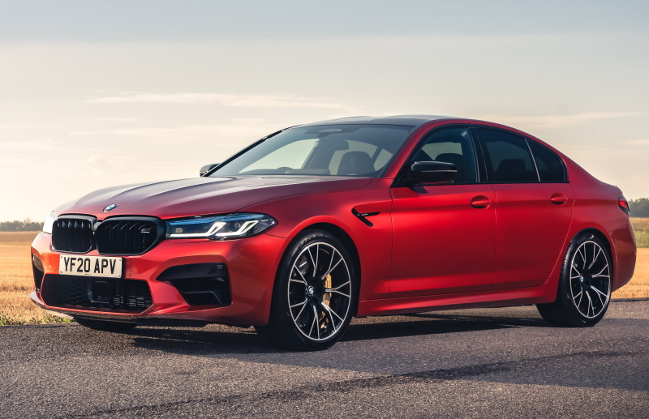

BMW M5 • 5 поколение (F10) • 2011–2016
Пятое поколение BMW M5 вышло на рынок в конце 2011 года. В модельном ряду вновь не было версии с кузовом универсал, «эмка» могла быть только седаном.
На смену атмосферному десятицилиндровому мотору пришёл двигатель V8 4.4 с двойным турбонаддувом, развивающий 560 л. с. Крутящий момент передавался на задние колёса через семиступенчатую роботизированную коробку передач с двойным сцеплением, а на американском рынке предлагался ещё и вариант с шестиступенчатой «механикой».
По паспортным данным BMW M5 был способен разогнаться до сотни за 4,3 секунды. Позднее в продаже появились лимитированные версии с двигателями, форсированными до 575 и 600 сил. Производство модели продолжалось до 2016 года. Цены на «БМВ М5» на российском рынке начинались с 5,5 млн рублей.



| Тип кузова | четырёхдверный седан |
|---|